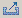

Because of the large number of food products available to consumers, it is very likely that
you use a food that is not listed in the database. In this case, you will need to create a
new food. You can use the "Food - Create New Food" function on the Menu Bar, or if there
is something similar in the
database, you can export it and then import it, rename it, and edit it. Basically, you need
to specify the name of the food, the quantity for which you have nutritional data, and then
enter the detailed quantity of nutrients under each of the tabs below.
Importing a Food
Click on "Food - Import Food" function to display a file dialog panel. Select the .xml file
and click on the Open button. The imported food will be placed in My Foods category.
Exporting a Food
This function provides a way of sharing your recipes by creating
a file with an .xml extension that can be sent to another CRON-o-Meter user.
Click on the food to select it, and then click the Export Food icon
, or
right click on the food that you want to export, and click the "Export Food" icon
from the pull-down menu that appears by the cursor. The dialog box lets you specify the folder where you would
like to save the recipe or food.